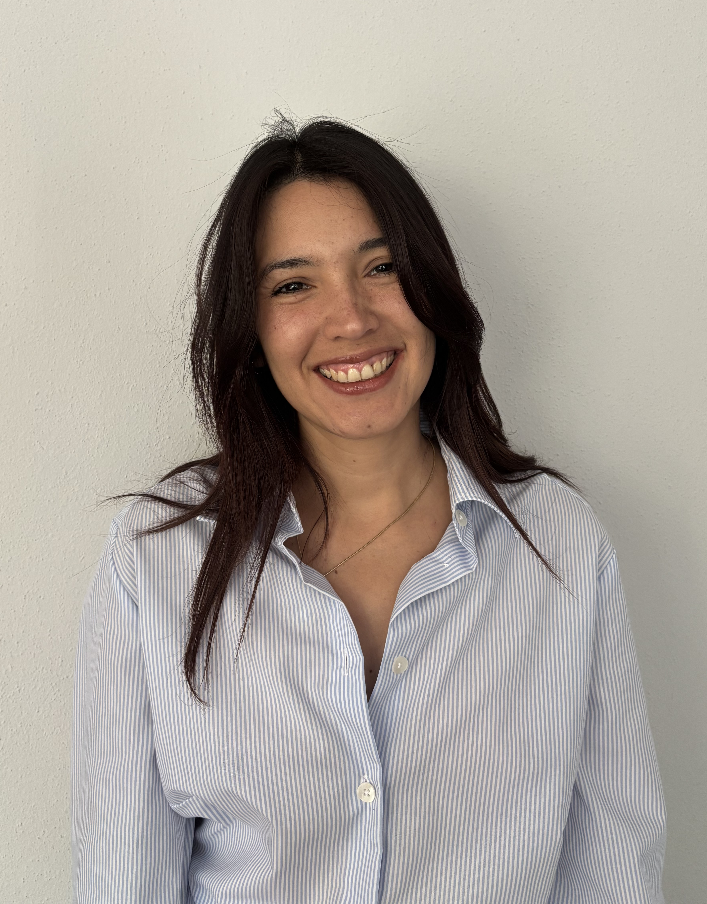

Hi, I’m Yessica.
A Management & Technology graduate who loves figuring out how things work, and how to make them work better.
I enjoy turning raw data into stories, visuals and decisions.

A closer look.
A selection of projects across AI, analytics and product development. Click on a project to explore the full case study.
Hover to fan the files out, then click one to open it.
More projects
Academy Operations & Technology Specialist
I worked on improving data quality, enterprise workflows and AI-enabled operations across the Celonis Academy. One of my main projects involved defining KPIs and building dashboards to identify and prioritise recurring data issues across seven use cases. I also developed automated solutions using Celonis workflows and AI agents, reducing the resolution time for recurring discrepancies from several days to approximately 30 minutes. Alongside this, I investigated LMS–Salesforce integration issues, collaborated with IT and vendors on system improvements, and helped improve AI-enabled learner support through better knowledge inputs and workflows.
Global Talent Acquisition Enablement Specialist
I managed global enablement programmes, digital tools and processes supporting Talent Acquisition teams across regions. A major part of my role was taking ownership of the employee referral programme, coordinating its operations, vendor platform, communications and campaigns with senior TA leadership. These initiatives helped increase the referral hire rate to 41%. I also developed learning paths and reporting for global teams, worked with vendors on platform improvements, and maintained shared documentation and knowledge structures in Confluence.
Global Talent Acquisition Enablement Intern
I supported the administration and rollout of global recruiting and learning platforms, including Greenhouse, HiPeople, Criteria and SocialTalent. My work involved managing user access and platform data, coordinating with vendors and internal teams, and supporting programme implementation. It was an introduction to working with enterprise systems and understanding how processes, data and people connect across global teams.
Earlier experience in finance & accounting
Before moving into business technology and analytics, I worked in accounting and financial operations across several organisations. My responsibilities included financial reporting, multi-entity accounting, general ledger and intercompany reconciliations, payroll, tax documentation and audit preparation. This experience gave me a practical understanding of financial processes, data accuracy and operational controls.
M.Sc. Management & Technology
Major: Entrepreneurship & Innovation · Minor: Computer Engineering
B.A. International Business
A broad foundation in business, economics and management, with an international perspective.
Get close to the actual problem
I use interviews, user feedback and process data to understand what is happening before deciding what needs to change.
Bring structure to the moving parts
I map systems, dependencies, data flows and ownership so that complex work becomes understandable and actionable.
Carry the work into practice
I build and test prototypes, dashboards, workflows or models rather than stopping once the recommendation is written.
Skills and tools
Cooking
Experimenting with new recipes and cuisines. The ones that turn out well earn a permanent place in my recipe collection.
Reading
Whether it's a story that pulls me in or a topic that sparks my curiosity, I love discovering new perspectives and finding books that are hard to put down.
Movement
Gym sessions, padel with friends, or dancing whenever I get the chance. I like the mix of a good workout and simply having fun.
Journaling
Part writing, part drawing, part photos: a little space to reflect and appreciate the little things.